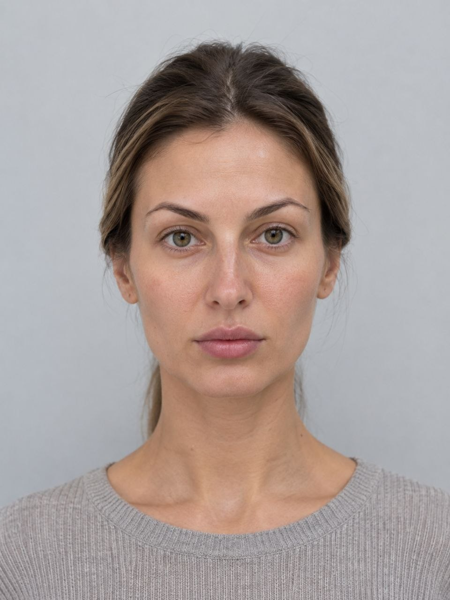
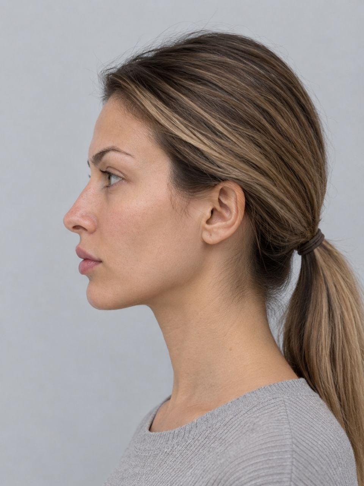
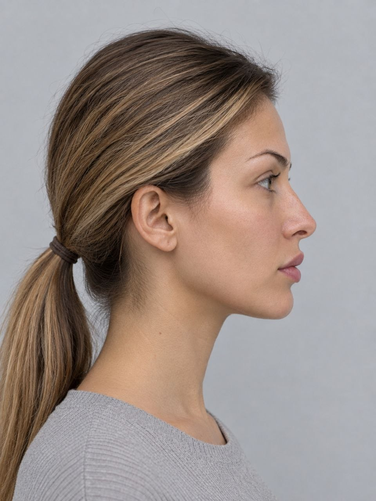
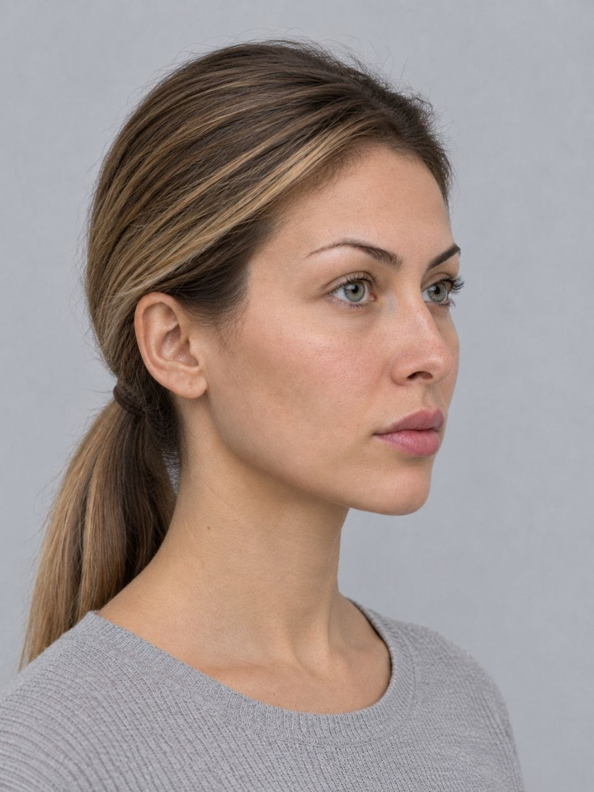
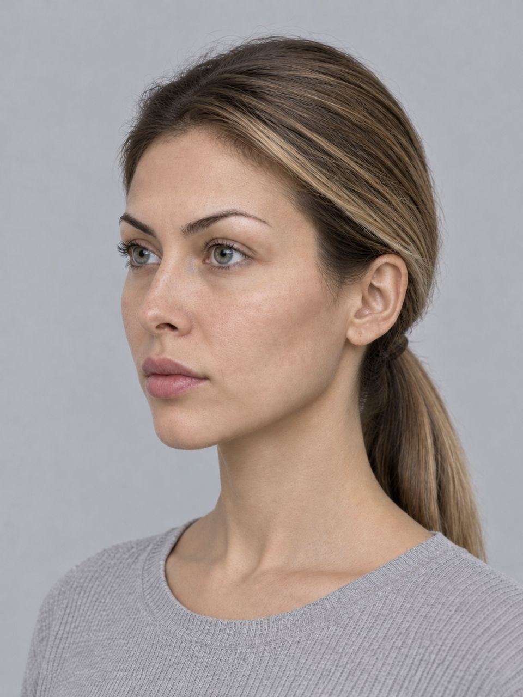
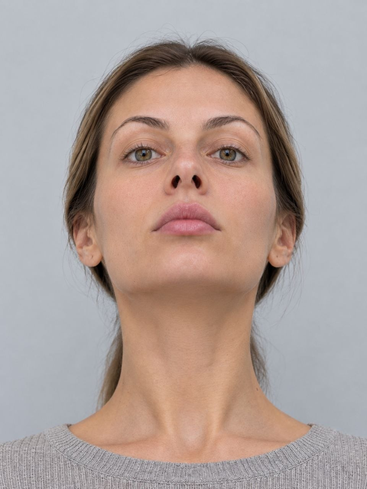
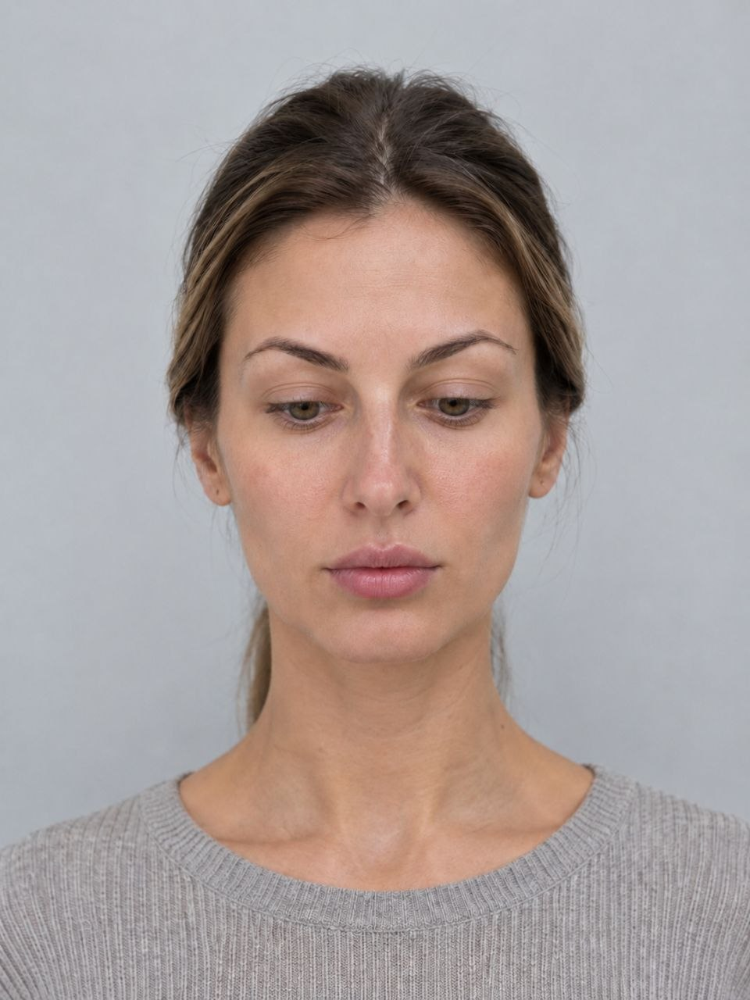

Как правильно сфотографироваться перед консультацией по ринопластике
Качественные снимки помогают мне подготовиться к консультации и дать вам точный ответ ещё до встречи
По фотографиям с разных ракурсов я вижу особенности строения носа, пропорции лица и возможные ограничения для операции
До консультации я уже понимаю, какие техники подойдут, и могу сразу обсудить конкретные варианты
На консультации мы не тратим время на базовую оценку — сразу переходим к вашим целям и ожиданиям
Перед съёмкой убедитесь, что всё настроено правильно
7 обязательных снимков — каждый даёт важную информацию об анатомии носа

Смотрите прямо в объектив. Голова ровно, без наклона и поворота. Подбородок параллелен полу.
Этот снимок показывает симметрию носа, ширину спинки и соотношение носа с другими чертами лица.
Совет: Попросите кого-то сфотографировать вас — на штативе или в руках держа телефон на уровне вашего лица. Автоспуск тоже подойдёт.

Повернитесь строго влево — камера должна видеть только левую сторону лица. Ухо полностью в кадре.
На профиле хорошо видна горбинка, угол кончика носа, соотношение носа и губ, длина и проекция.
Совет: Убедитесь, что противоположное ухо не видно в кадре — значит поворот достаточный.

То же самое, но теперь поворот вправо. Важно сделать оба профиля — нос редко бывает симметричным.
Сравнение двух профилей позволяет выявить искривление перегородки, асимметрию и разницу в форме ноздрей.
Совет: Сделайте несколько снимков с каждой стороны и выберите тот, где голова не наклонена.

Поверните голову влево примерно на 45 градусов. Должны быть видны оба глаза, но правый немного больше.
Три четверти — один из самых информативных ракурсов. Показывает объём и форму носа в натуральном повороте головы.
Совет: Ориентир — кончик носа должен находиться примерно на линии щеки с противоположной стороны.

Симметрично: поворот вправо на 45 градусов. Видны оба глаза, левый — чуть больше.
Вместе с четвёртым ракурсом даёт полную картину асимметрии и помогает спланировать точные коррекции.
Совет: Взгляд направлен прямо вперёд, а не в камеру — так лицо в более естественном положении.

Запрокиньте голову назад так, чтобы кончик носа смотрел прямо в камеру. Камера направлена снизу вверх.
Этот ракурс показывает форму и симметрию ноздрей, колумеллу и базу носа — детали, не видимые с других углов.
Совет: Удобнее всего сделать этот снимок самостоятельно — держите телефон перед лицом и поднимайте подбородок вверх.

Лицо смотрит прямо, но взгляд опущен на 10–15 градусов вниз. Голова не наклоняется — только глаза.
Помогает оценить выступание кончика носа, его соотношение с губой и общий баланс нижней трети лица.
Совет: Смотрите на точку примерно в метре перед собой на полу. Лицо при этом остаётся прямым.
Из-за них фотографии приходится переделывать
Широкоугольный объектив фронтальной камеры искажает пропорции носа. Используйте только основную камеру на расстоянии 1,5–2 метра.
Макияж скрывает детали рельефа кожи, цвет и текстуру. Приходите на фото «как есть» — это помогает видеть реальную картину.
Пряди на щеках или спускающиеся на нос мешают оценить контуры. Соберите волосы в хвост или заколите.
Контровой свет превращает лицо в силуэт. Боковой даёт жёсткие тени. Встаньте лицом к источнику света.
Камера выше или ниже уровня лица искажает форму носа. Строго на уровне глаз — для анфаса и профилей.
Улыбка или нахмуренные брови меняют форму кончика носа. Нейтральное расслабленное выражение лица — обязательное условие.
Сделайте снимки по инструкции и запишитесь на консультацию. Я изучу фотографии заранее и мы сразу перейдём к делу.
Записаться на консультацию